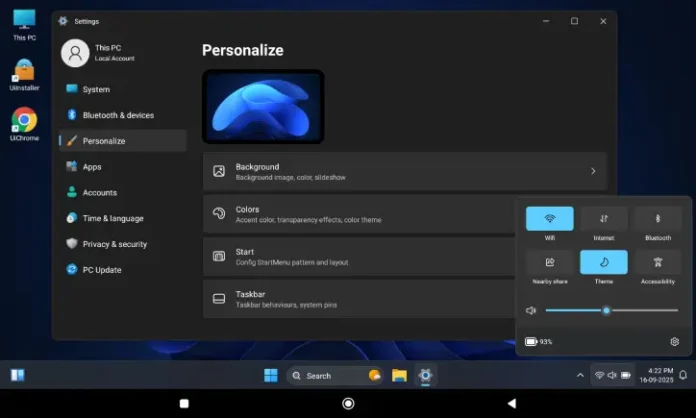

出差第三天我的平板变成了一台迷你电脑
带安卓平板出差原本只想看看文档，结果候机时捣鼓 HyperDroid 把它变成了带任务栏和开始菜单的桌面——接键鼠、开多窗口、临时改了份方案。
候机厅里的意外发现
出差第三天，在虹桥机场 T2 蹲延误。登机口的充电位被占了一半，我抱着那块 11 寸的安卓平板缩在角落，屏幕上只开着一个在线文档和一个会议笔记 App。
之前把它带出来，纯属想着路上能刷个剧、查个行程，没真打算用它干活——安卓平板原生界面那一排排图标，每开一个 App 都全屏铺满，要切回来还得划个手势，干正经事总觉得差口气。
那天也不知道抽哪门子风，在应用市场翻到了 HyperDroid。
名字听起来像某种科幻设备。点开hyperdroid官网介绍页，就一张截图：底下一条任务栏，中间桌面散落着"此PC""文档""音乐"几个图标，左下角一个 Windows 徽标样式的开始按钮。
我愣了三秒。这真的是 Android 吗？
五分钟把平板换了个灵魂
安装包从官方下载拿的，点开 HyperDroid 的图标，弹出一个"是否设为默认启动器"的请求。我确认了。
然后整个屏幕黑了大概一秒。
再亮起来的时候，我差点以为自己拿错了设备——底部是一条完整的任务栏，中间桌面图标区摆着快捷方式，左下角就是那个 Windows 徽标。我下意识按了一下平板侧边的音量键，没反应，然后想起来这是桌面环境，音量应该在系统托盘里调。
右下角果然有一排小图标：Wi-Fi、蓝牙、一个小电池。点了一下电池图标，跳出当前电量百分比和充电状态。这体验，跟我家里那台笔记本简直一模一样。

后来去hyperdroid文档翻了一下才弄明白，它不是什么主题皮肤，是完整的桌面环境。原生 Android 还在底下跑，只是桌面上这层壳换了个样子。设默认启动器的动作，本质上就是把桌面的"控制权"交给它。
键鼠接上的那一刻，才是真的对了
登机前半小时蓝牙键盘和鼠标终于配对好了。之前出门只带了键盘，鼠标本来嫌占地方没带，结果候机厅实在无聊翻包里翻出了一只旧的蓝牙鼠标。
配对过程比预想的顺。打开 HyperDroid 设置里的"蓝牙与设备"，键鼠长按配对键等指示灯闪两下，列表里就出现了设备名，点一下连上了。
光标瞬间出现在屏幕上——不是系统默认那种十字准星，是正经 Windows 样式的白色箭头。我在桌面空白处点了右键，居然弹出来了一个上下文菜单，有"刷新""新建文件夹"几个选项。触屏长按才能模拟右键，鼠标一下就搞定。
然后试了一下 Win 键。
键盘上那个 Win 键按下去，开始菜单从任务栏左侧弹了出来——固定应用区在上，完整应用列表在下，还带了个推荐区块。我搜了一下"设置"，HyperDroid 的设置面板跳了出来，分类整整齐齐：蓝牙与设备、个性化、系统、关于。

多窗口同时开，效率突然上来了
酒店里安顿下来之后，终于有机会认真用一下这个桌面环境。
我的日常工作流是开个在线文档写方案，旁边挂一个浏览器查资料，同时开个笔记 App 随时记点想法。原生安卓平板切来切去很混乱，HyperDroid 直接帮我解决了这个问题——每个 App 都可以窗口化，标题栏拖到屏幕边缘还能自动吸附成二分屏。
我把浏览器窗口拖到屏幕左半，文档 App 拖到右半，调整一下窗口边角的大小，两个窗口同时显示。鼠标点哪个哪个就激活，键盘打字也不丢焦点。这体验，如果不是亲眼盯着那块 11 寸的屏幕，我都忘了底下跑的是 Android。
期间有一个 App 打开后闪了一下就关了，查了下 HyperDroid 里的闪退排查章节，发现那个 App 强制要求全屏，窗口化跟它的代码逻辑冲突。临时把那个窗口最大化了一下就没再闪退——HyperDroid 的窗口既能最小化也能最大化，需要全屏的 App 就让它全屏待着，其他几个继续窗口化互不干扰。
也遇到了几个小坑
不是所有事都完美。
HyperDroid 比较吃内存，平板本身只装了几个办公 App 还好，但同时开了浏览器、文档、笔记再加个音乐播放器之后，后台有时候会被 Android 系统杀掉一两个。文档里给的建议是同时保持三四个窗口以内，我照着做果然稳了很多。
还有就是 HyperDroid 版本要跟上，它迭代频率不算慢，每个版本都在修兼容性问题。之前遇到过某个 App 在老版本 HyperDroid 里打不开，更新到最新版之后就正常了。
电量消耗也要留意——多窗口加蓝牙键鼠，比原生界面耗电快。还好酒店有充电口，在外面的话记得带上充电宝。
回去之后我一直在用
出差回来那块平板就没再换回原生启动器。
每天早上摸起来按一下 Win 键打开开始菜单，固定的文档和浏览器图标就在第一行，点一下进入状态。晚上躺床上看剧，HyperDroid 也不拦着，只是任务栏还老老实实待在底下——想全屏的话最大化窗口就行。
有人问我，不就是个主题皮肤吗。我解释了半天也说不清楚，只能让他们自己装了试试。
后来想了想，大概就是这个感觉吧：之前那块平板像个放大版的手机，现在它终于像一台小电脑了。能接鼠标键盘，能开多窗口，能像在桌面那样工作。对一个经常出差的人来说，把 iPad 换成安卓平板加 HyperDroid 的组合，省了不少行李重量。
要说有什么缺点？可能就是我现在对着原生 Android 的图标网格界面，总觉得哪里不太对劲。这套桌面环境一旦用惯了，就真的回不去了。
这套资料在三个仓库都能拿到——我自己习惯在手机上刷GitHub，但国内有时候访问Gitee更顺；GitCode那份是同步备份，防止两个源都抽风的时候没地方找。HyperDroid 的二进制更新也挺勤的，保持最新版就好。